Generates various visualizations for a fitted cross-validated parity regression
model object. It supports plotting estimated coefficients, risk contributions, coefficient
paths, and cross-validation error curves based on the specified plot_type.
Arguments
- x
A fitted model object of class
"cv.savvyPR"returned bycv.savvyPR.- plot_type
Character string specifying the type of plot to generate. Can be
"estimated_coefficients","risk_contributions","cv_coefficients", or"cv_errors". Defaults to"estimated_coefficients".- label
Logical; if
TRUE, labels are added based on the plot type:- cv_coefficients
Variable names are added to the coefficient paths.
- risk_contributions
Numeric labels are added above the bars.
- estimated_coefficients
Numeric values are added to the coefficient plot.
- cv_errors
Numeric labels are added to the optimal error point.
Default is
TRUE.- xvar
Character string specifying the x-axis variable for plotting coefficient paths. Options are
"norm","lambda","dev", and"val". This argument is only used whenplot_type = "cv_coefficients".- max_vars_per_plot
Integer specifying the maximum number of variables to plot per panel. Cannot exceed
10. Default is10. This argument is only used whenplot_type = "cv_coefficients".- ...
Additional arguments passed to the underlying
ggplotfunction.
Details
Plot for a Cross-Validated Parity Regression Model
This function offers four types of plots, depending on the value of plot_type:
- Estimated Coefficients
Generates a line plot with points for the estimated coefficients of the optimally tuned cross-validated regression model. If an intercept term is included, it will be labeled as
beta_0; otherwise, coefficients are labeled sequentially based on the covariates. Iflabel = TRUE, numeric values are displayed on the plot. This plot helps visualize the contribution of each predictor variable to the model.- Risk Contributions
Generates two bar plots, one for the optimization variables (weights or target values) and one for risk contributions, from the risk parity model. If
label = TRUE, numeric labels are added above the bars for clarity.- Coefficient Paths
Generates a plot showing the coefficient paths against the selected
x-axisvariable (val,lambda,norm, ordev) depending on the model type:PR1/PR2: Plots coefficient paths against
log(val)values.PR3: Plots coefficient paths against
log(lambda)values.
Invalid combinations of
model_typeandxvarwill result in an error:PR1/PR2: Cannot use
"lambda"asxvar.PR3: Cannot use
"val"asxvar.
If
max_vars_per_plotexceeds10, it is reset to10. The plot provides insight into how coefficients evolve across different regularization parameters.- Cross-Validation Errors
Generates a plot that shows the cross-validation error metric against the logarithm of the tuning parameter (
valorlambda), depending on the model type. It adds a vertical dashed line to indicate the optimal parameter value.PR1/PR2: Plots cross-validation errors against
log(val)values.PR3: Plots cross-validation errors against
log(lambda)values.
Author
Ziwei Chen, Vali Asimit and Pietro Millossovich
Maintainer: Ziwei Chen <ziwei.chen.3@citystgeorges.ac.uk>
Examples
# \donttest{
# Example usage for `cv.savvyPR` with Correlated Data:
set.seed(123)
n <- 100
p <- 10
# Create highly correlated predictors to demonstrate parity regression
base_var <- rnorm(n)
x <- matrix(rnorm(n * p, sd = 0.1), n, p) + base_var
beta <- matrix(rnorm(p), p, 1)
y <- x %*% beta + rnorm(n, sd = 0.5)
# Fit CV model using Budget method
cv_result1 <- cv.savvyPR(x, y, method = "budget", model_type = "PR1",
measure_type = "mse", intercept = FALSE)
plot(cv_result1, plot_type = "estimated_coefficients")
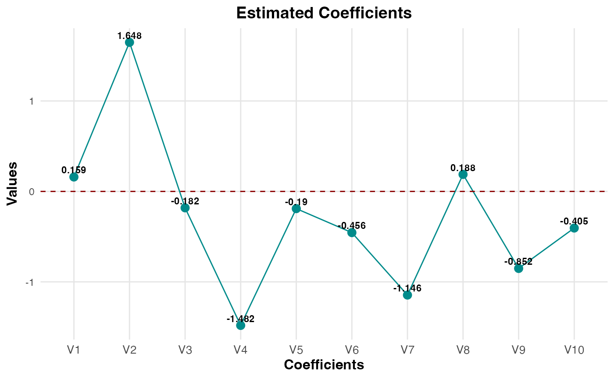
plot(cv_result1, plot_type = "risk_contributions", label = FALSE)
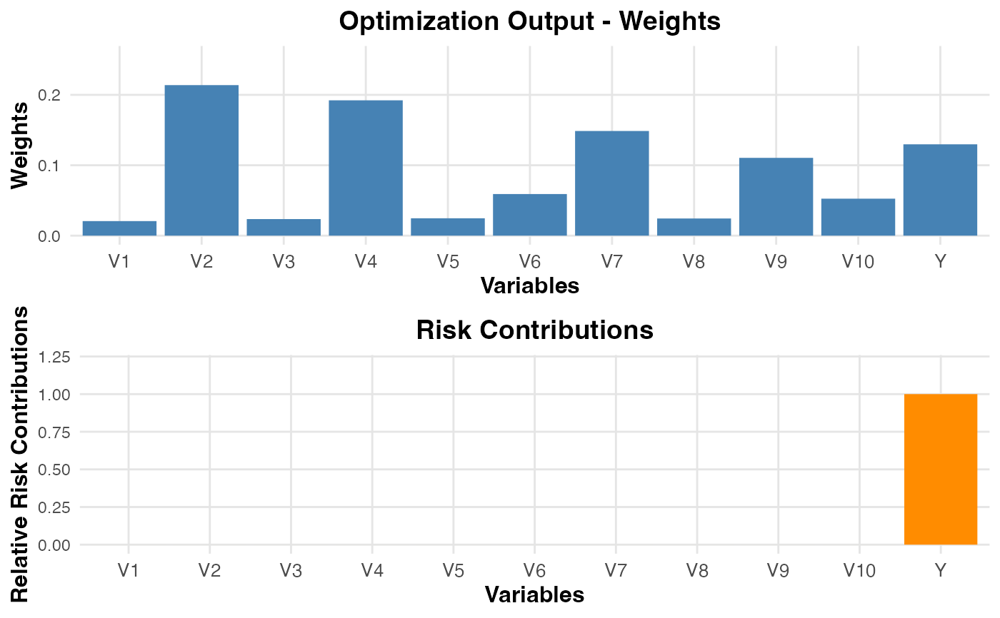
plot(cv_result1, plot_type = "cv_coefficients", xvar = "val", max_vars_per_plot = 10)
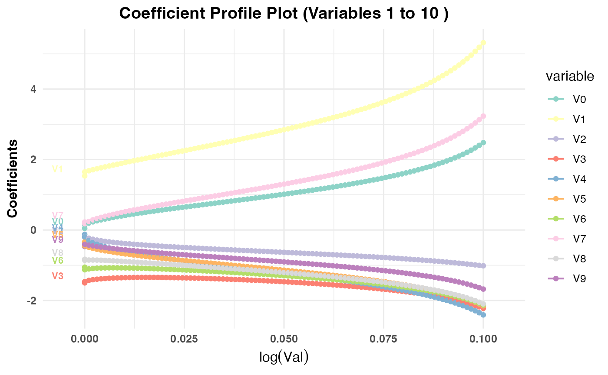
plot(cv_result1, plot_type = "cv_errors")
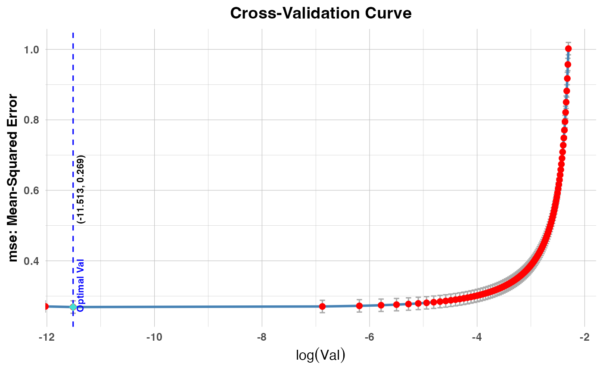
# Fit CV model using Target method
cv_result2 <- cv.savvyPR(x, y, method = "target", model_type = "PR2")
cv_result3 <- cv.savvyPR(x, y, method = "budget", model_type = "PR3")
plot(cv_result2, plot_type = "cv_coefficients", xvar = "val",
max_vars_per_plot = 5, label = FALSE)
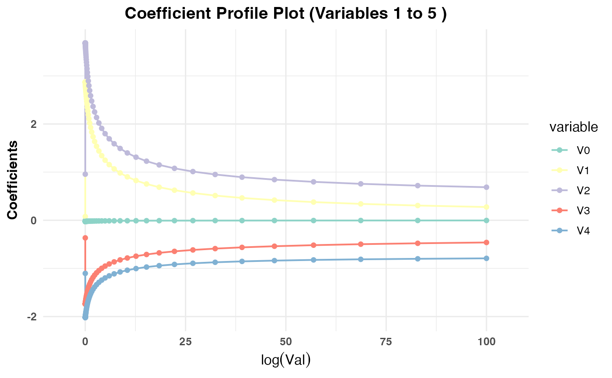
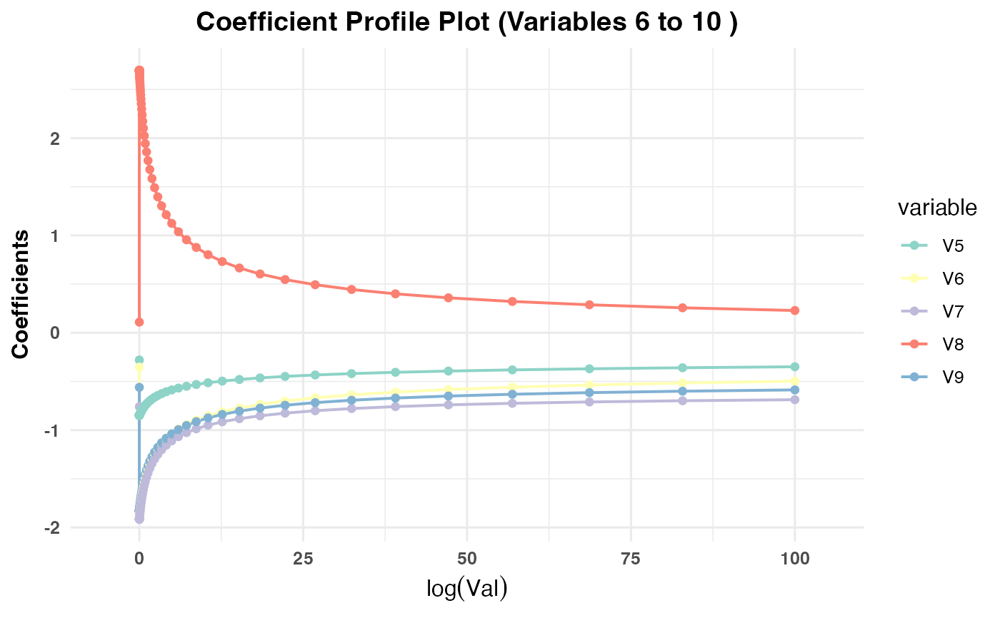
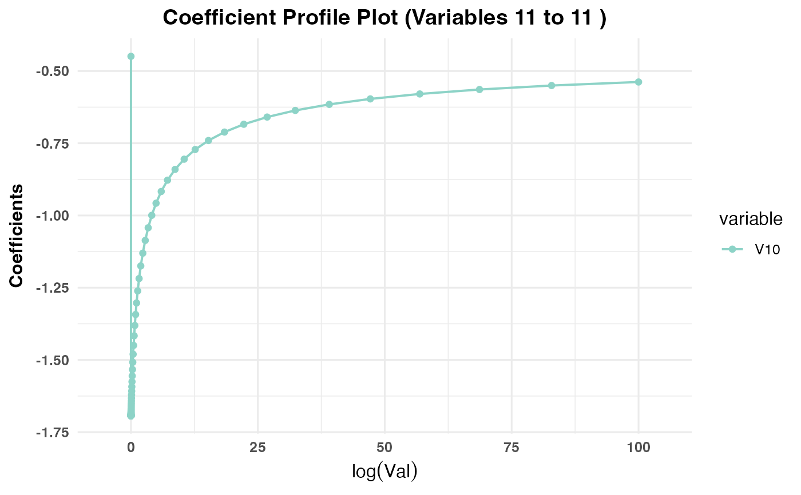
plot(cv_result3, plot_type = "cv_coefficients", xvar = "lambda",
max_vars_per_plot = 10, label = TRUE)
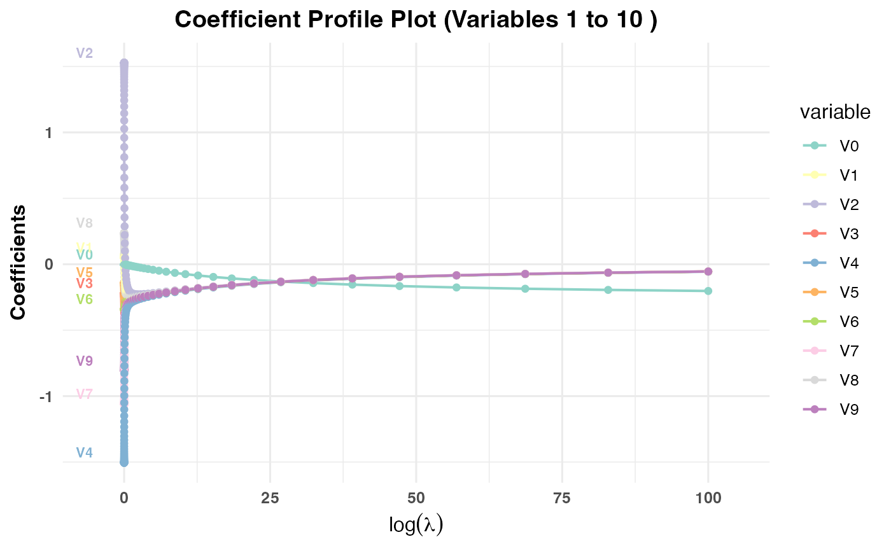
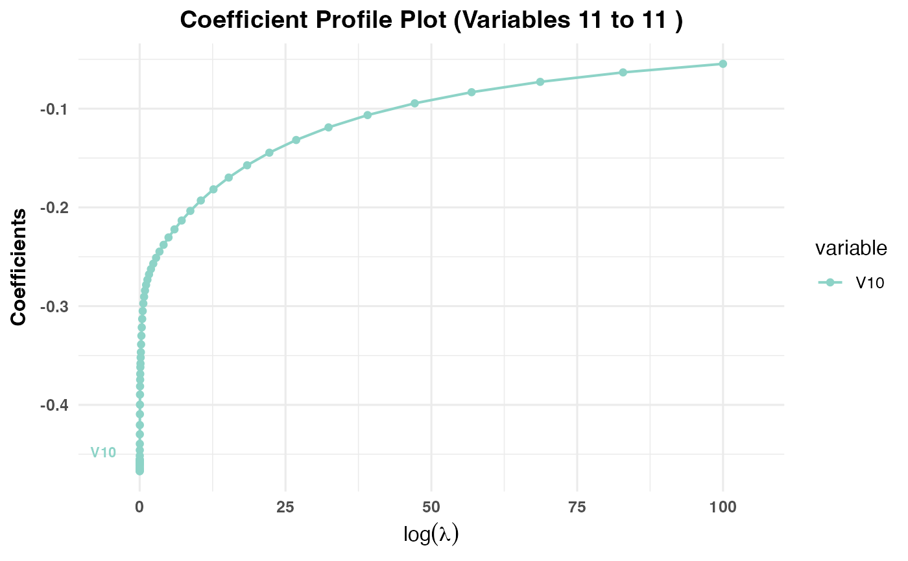
plot(cv_result2, plot_type = "cv_errors", label = FALSE)
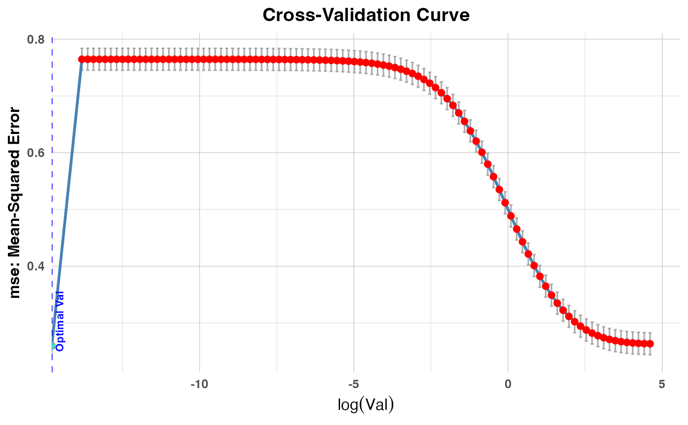
plot(cv_result3, plot_type = "cv_errors", label = TRUE)
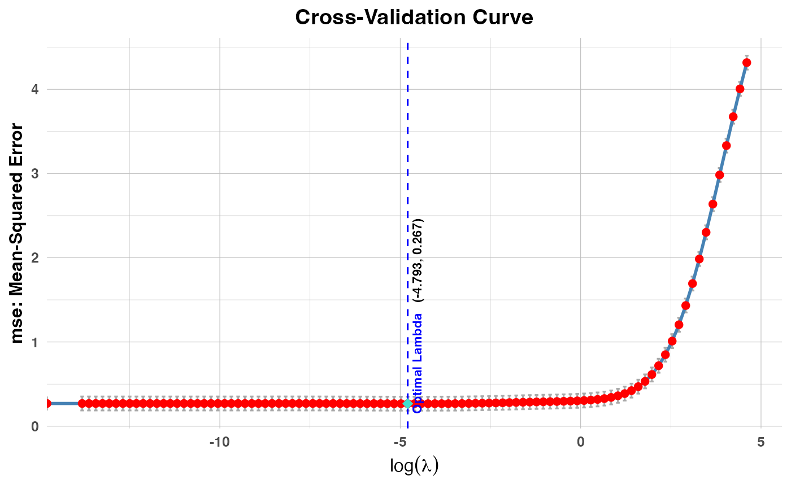
# }